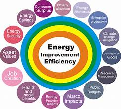
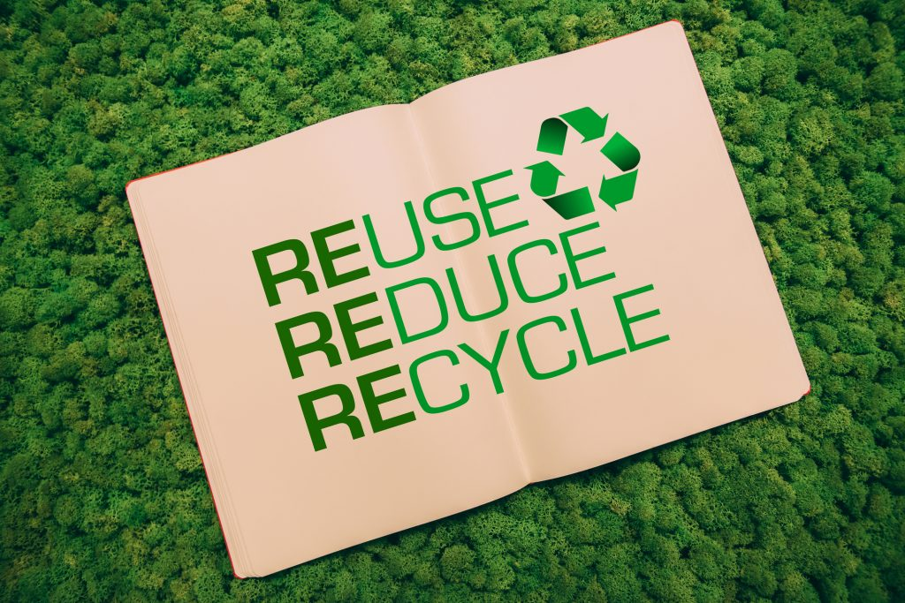

Renewable Energy
Using renewable energy sources such as solar, wind, and geothermal can significantly reduce carbon emissions.
Energy Efficiency

Improving energy efficiency in buildings and transportation can also reduce carbon emissions.
Reduce Waste

Reducing waste through recycling and composting can also help combat global warming.
Transportation
Using public transportation, biking, or walking can help reduce carbon emissions from cars and trucks.
Advocacy
Advocating for policies and regulations that reduce carbon emissions, such as a carbon tax, can also make a significant impact.
Know More